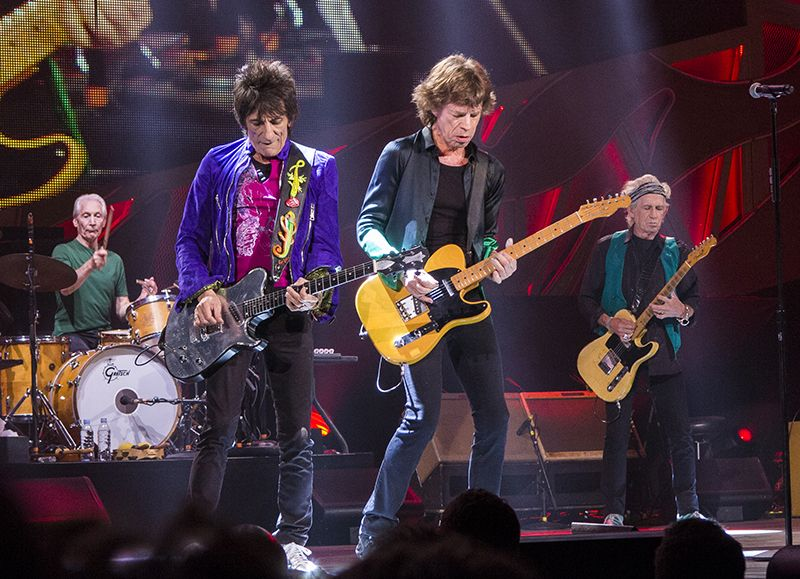
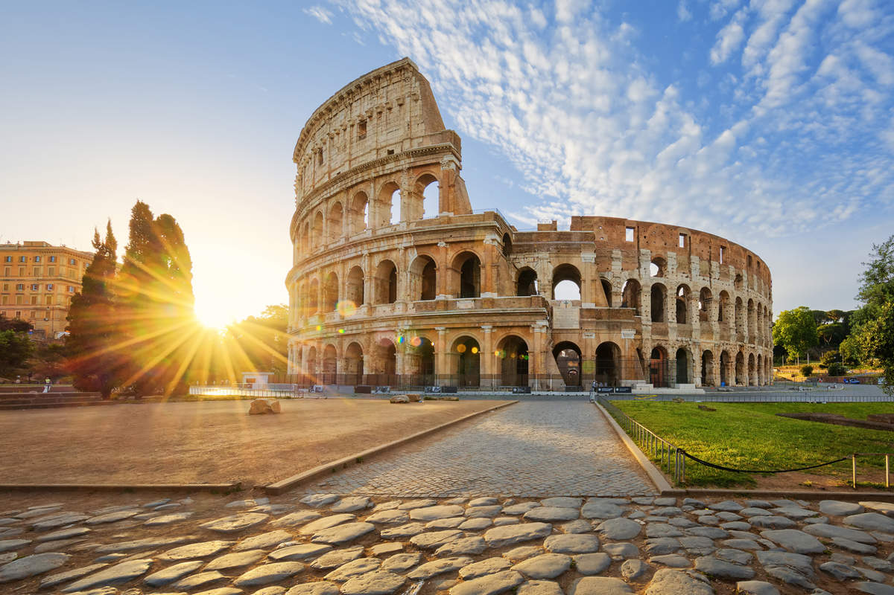

- Rolling Stones:Banda de rock británica formada en 1962, considerada una de las más influyentes en la historia del rock.

- RadioHead: Banda de rock alternativo originaria de Inglaterra, formada en 1985. Son famosos por su experimentación musical y álbumes icónicos como OK Computer y Kid A.
- Royal Albert Hall: Es uno de los recintos más emblemáticos del mundo, usado para conciertos de música clásica, rock y eventos especiales.
- Ramen: Plato tradicional japonés que consiste en fideos servidos en un caldo caliente, acompañado de carne, huevo, vegetales y otros ingredientes.
- Roma: Ciudad capital de Italia, conocida por su historia milenaria como centro del Imperio Romano.
